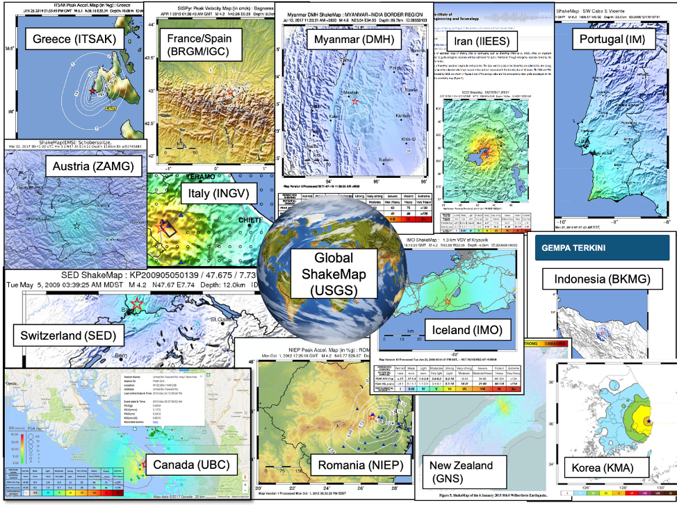
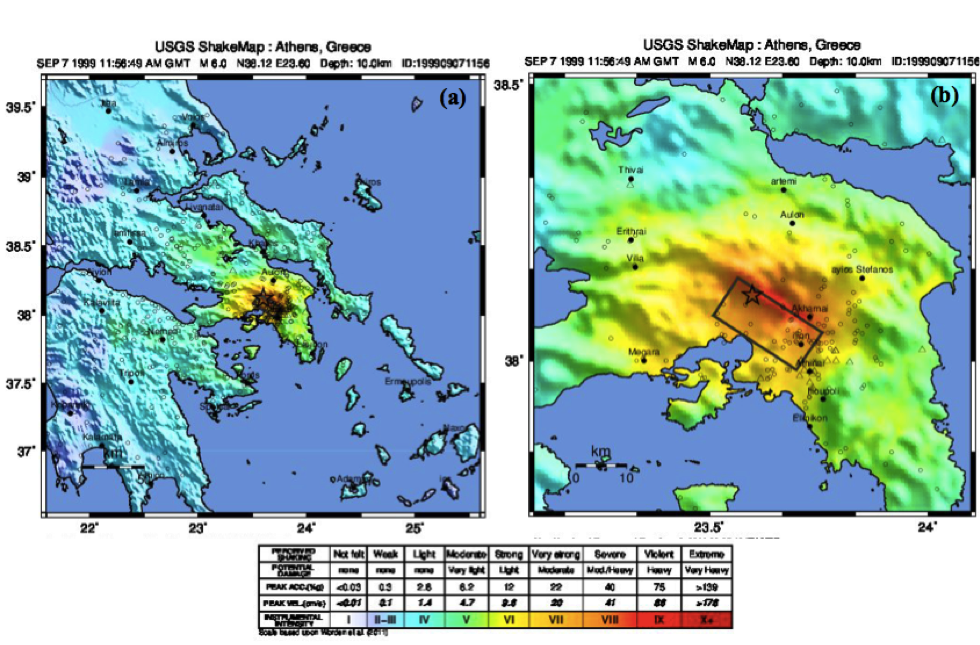
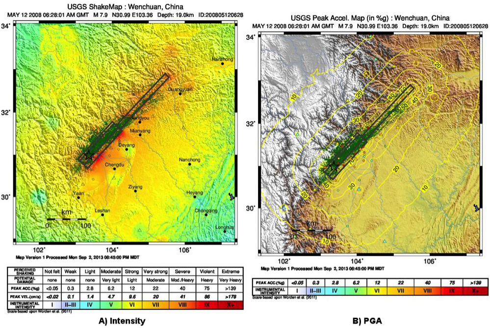
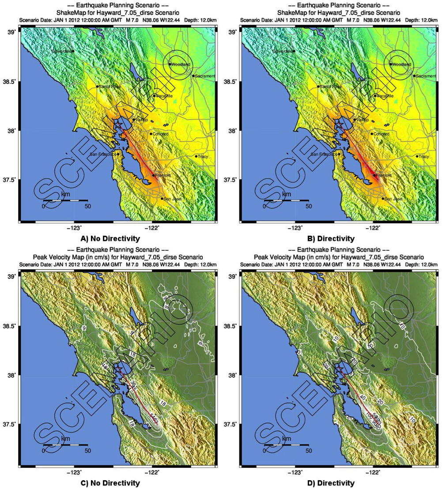
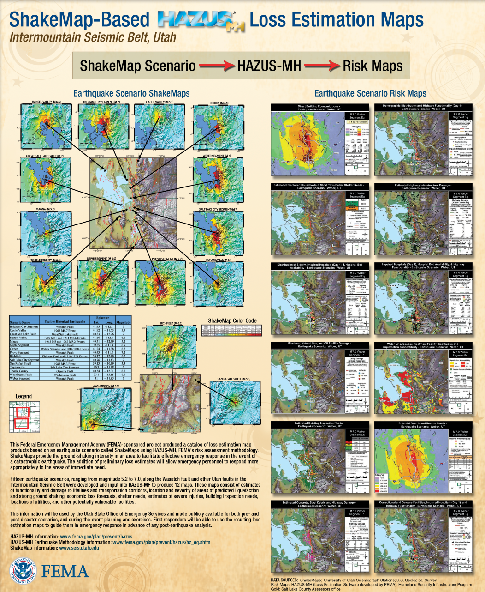
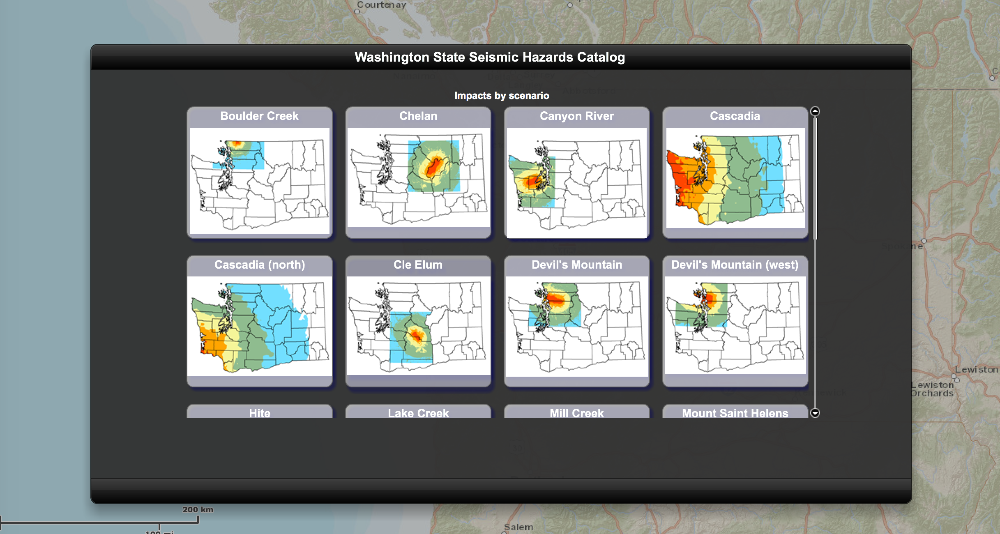
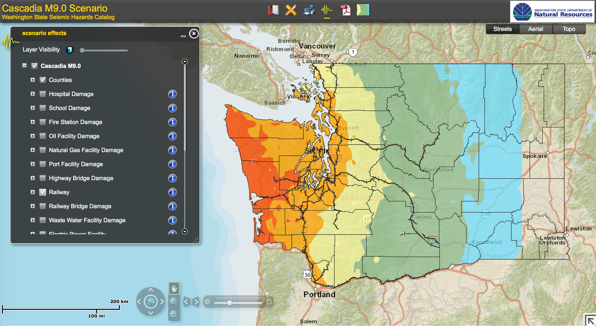

ShakeMap Archives¶
All ShakeMaps are available for viewing and download online. The ShakeMap Archives consist of three primary repositories: Recent ShakeMaps, the ShakeMap Atlas for historic earthquakes (primarily 1970-2012), and a collection of hypothetical earthquake ShakeMap Scenarios. For example, scenario earthquakes compiled for Northern and Southern California represent over 200 different earthquake ruptures studied for California, as detailed below. Formats for all ShakeMaps, whether near–real-time, historic, or future scenarios, are uniform.
Note
Some older archival ShakeMaps online were generated with earlier versions of the ShakeMap software; hence, they do not contain up-to-date formats and all products. This will be remedied as older events are rerun and updated. One can tell from the processed time on the bottom of any ShakeMap when it was run.
Real-time ShakeMaps¶
In the U.S., ShakeMaps are generated via independent systems running at ANSS Regional Seismic Systems (RSNs) in Northern California, Southern California, the Pacific Northwest, Utah, Nevada, and Alaska. For the rest of the U.S., the ShakeMap group at the USGS National Earthquake Information Center (NEIC) in Golden, Colorado produces maps for the regional networks operating in Hawaii, New England, and the Central and Eastern U.S. on a system referred to as Global ShakeMap (GSM). The input, metadata, and output files produced by all these instances are aggregated by the USGS via the Earthquake Hazards Program web system. GSM also provides backup capabilities for the RSNs, but with degraded capabilities; not all data are flowing from the RSNs to GSM automatically.
Separate independent systems running in Puerto Rico and New England generate ShakeMaps, but these instances do not deliver them through the USGS Earthquake Hazards Program webpages (at the time of this writing). GSM covers these regions but does not yet access the full set of data available to all of these regional systems.
Internationally, USGS ShakeMap is installed and operational in Italy, France, Portugal, Switzerland, Romania, Indonesia, Iran, Iceland, Panama, and several other nations (see Fig. 2.17). Several instances of ShakeMap are in testing or operational mode in the Middle East (including Oman, Morocco, and the U.A.E.; M. Franke, written comm., 2015). In addition, other ShakeMap installations are in testing in Latin America and the Caribbean (Chile, Colombia, Mexico, Costa Rica), and in Southeast Asia (Malaysia and Korea). Discussions have taken place with several other interested countries.
Note
Very impressive systems analogous to ShakeMap operate in Japan (JMA), Taiwan, China, New Zealand, Turkey, and several other countries.
{kind=link}

Fig. 2.17 International ShakeMap Systems¶
ShakeMap Atlas¶
ShakeMap was designed with near–real-time earthquake response purposes in mind. However, many of the strategies for mapping the patterns of peak ground motions for real-time applications described above prove useful for re-creating the shaking from historic earthquakes.
The ShakeMap Atlas (Allen et al., 2008, 2009a) is a self-consistent, well-calibrated collection of historic earthquakes for which ShakeMaps were systematically generated. The Atlas constitutes an invaluable online resource for investigating near-source strong ground motion, as well as for seismic hazard, scenario, risk, and loss-model development.
The original (2009) Atlas is a compilation of nearly 5,000 ShakeMaps for the most significant global earthquakes between 1973 and 2007 (Allen et al., 2008). Garcia et al. (2012a) introduced an update of the Atlas, which extends the time period through 2012, with a total of 6,100 events. The revised Atlas 2.0 includes: a new version of the ShakeMap software (V3.5) which improves interpolation and uncertainty estimations; an updated earthquake source catalogue that includes regional locations and finite fault models; a refined strategy to select prediction and conversion equations based on a new seismotectonic regionalization scheme (Garcia et al., 2012b); and vastly more macroseismic-intensity and ground-motion data from international agencies.
In order to best replicate shaking that occurred during historic and recent earthquakes, we employ many of the ShakeMap tools described in the previous sections. For many older events, the important constraints (in addition to the usual site condition map) are the fault rupture geometry, macroseismic intensity, and peak ground motion data. As previously described, combining peak ground motions and macroseismic data was accomplished seamlessly and rigorously with the new interpolation scheme developed by Worden et al. (2018). This strategy was in part aimed at most accurately representing historic earthquake shaking maps, which are often constrained predominantly by key macroseismic observations, and is essential for the Atlas.
{kind=link}

Fig. 2.18 Example of the macroseismic intensity ShakeMaps for one ShakeMap Atlas event: the 1999 M6.0 Athens, Greece earthquake. (A) overview map; and (B) zoomed map. The black rectangle delineates the surface projection of the finite fault (a normal fault dipping southwest). Circles represent native MMI data; triangles show PGM data converted to MMI values via the Worden et al. (2012) GMICE, the choice of which automatically redefines the legend scale. After Garcia et al. (2012a).¶
The Atlas provides a hazard base layer for an number of systems that require estimates of the shaking values where losses occurred. To this end, the Atlas is used for the Earthquake Consequences Database within the Global Earthquake Model initiative (GEMECD; So, 2014). The “GEMECD subset” is a collection of approximately 100 events which constitute the most important and damaging events since about 1973. The purpose of the GEMECD subset is to provide the Global Earthquake Model (GEM) Foundation—and hence the wider earthquake hazard and loss community—a common-denominator hazard layer for calibrating and testing earthquake damage and loss models. The Atlas is also the calibration hazard layer for the USGS PAGER system (e.g., Wald et al., 2008; Jaiswal and Wald, 2010; Pomonis and So, 2011).
A subset of the Atlas was also employed by Zhu et al. (2014) for the calibration of near–real-time liquefaction probability maps, and by Nowicki et al. (2014) for near–real-time landslide mapping. As with earlier studies (including Godt et al., 2008; Jaiswal et al., 2010, 2012; Knudsen and Bott, 2011; Matsuoka et al, 2015), these authors recognized the importance of calibrating empirical ground failure and loss models against a standardized set of uniformly-produced shaking hazard maps so as to allow comparison of models based on consistent hazard inputs. Fig. 2.19 shows an example of the possibility of constraining shaking at landslide sites using ShakeMap layers for the 2008 M7.9 Wenchuan, China earthquake, employing shaking constraints provided by strong-motion and intensity data as well as detailed fault geometry.
{kind=link}

Fig. 2.19 Example of the ShakeMaps for the 2008 M 7.9 Wenchuan, China earthquake for (A) Intensity and (B) PGA. Green polygons show areas of landsliding mapped out by Dai et al. (2010). Black rectangles delineate the surface projection of the different fault segments involved in the rupture. Triangles indicate native strong motion stations; circles represent MMI data converted to GM values via a GMICE (here Worden et al., (2012), the choice of which automatically redefines the legend scale.¶
ShakeMap Scenarios¶
In addition to historical and near–real-time applications, ShakeMap has become widely used for earthquake mitigation and planning exercises through earthquake scenarios. A scenario represents one realization of a potential future earthquake by assuming a particular magnitude, location, and fault-rupture geometry and estimating shaking using a variety of strategies (including ShakeMap with GMPEs). Some of the technical issues related to scenario generation are discussed in the Technical Guide. Here we cover the many uses for earthquake scenarios from the users’ perspective.
In planning and coordinating emergency response, utilities, local government, and other organizations are best served by conducting training exercises based on realistic earthquake situations—ones similar to those they are most likely to face. ShakeMap Scenario earthquakes can fill this role. They can also be used to examine exposure of structures, lifelines, utilities, and transportation corridors to specified potential earthquakes.
The September, 2015, Report to NEHRP Agencies from the Advisory Committee on Earthquake Hazards Reduction (ACEHR), notes:
USGS Recommendation 4 - ACEHR recommends the USGS expand earthquake scenario development in conjunction with stakeholder engagement in order to examine consequences of earthquakes in high-risk urban areas.
To this end, USGS ShakeMap webpages now display many earthquake scenarios, and we are working to develop a comprehensive suite of scenarios for all at-risk regions of the United States (see Thompson et al., 2016).
USGS Recommendation 5 - ACEHR recommends the USGS work with operators of critical infrastructure and lifeline systems to define and integrate near real-time earthquake data and other seismic information into system monitoring so that operators can quickly assess system impacts from earthquake movements and take appropriate actions. This development should be linked with the EEW program.
A ShakeMap earthquake scenario is simply a ShakeMap with an assumed magnitude and location, and, optionally, specified fault geometry. For example, Fig. 2.20 shows ShakeMap scenario intensity (top) and peak velocity (bottom) maps for a hypothetical earthquake of M7.05 on the Hayward Fault in the eastern San Francisco Bay area. Due to the proximity to populated regions of Oakland, Berkeley, and surrounding cities, this scenario represents one of the most destructive earthquakes that could impact the region. Different renditions of this particular scenario have been widely used for evaluating the region’s capacity to respond to such a disaster among federal, state, utility, business, and local emergency response organizations.
{kind=link}

Fig. 2.20 ShakeMap scenario intensity (top) and peak velocity (bottom) maps for a M7.05 Hayward Fault, CA, earthquake: A) intensity; no directivity, B) intensity; directivity added, C) peak velocity; no directivity, and D) peak velocity; directivity added.¶
The USGS and ANSS partners receive numerous requests for ShakeMap scenarios annually. The NEIC Global ShakeMap (GSM) operators have also generated scores of scenarios for colleagues, partners, other federal agencies, non-profit organizations, and governments around the globe. These and other scenarios are available online on the ShakeMap webpages. They are formatted the same as other ShakeMaps, so they can be easily used in response planning and loss estimation as well as for educational purposes.
ShakeMap earthquake scenarios can be an integral part of earthquake emergency response planning. Primary users include city, county, state and federal government agencies (e.g., the California EMA, FEMA); and emergency-response planners and managers for utilities, businesses, and other large organizations. ShakeMap scenarios are particularly useful in planning and exercises when combined with loss-estimation systems such as PAGER, HAZUS, and ShakeCast, which provide ShakeMap-based estimates of overall social and economic impact, detailed loss estimates, and inspection priorities, respectively. Since ShakeMap’s inception, operators have generated hundreds of earthquake scenarios that have been used in formal earthquake response exercises around the world.
Generating Earthquake Scenarios¶
Given a selected event, we have developed tools to make it relatively easy to generate a ShakeMap earthquake scenario. All that is required is to assume a particular fault or fault segment will (or did) rupture over a certain length and with a chosen magnitude, and to generate a file describing the fault geometry and another describing the magnitude and hypocenter of the ostensible earthquake (see the Software Guide for details). ShakeMap can then estimate the ground shaking at all locations over a chosen area surrounding the fault and produce a full suite of data products just as if the event were a real earthquake. Ground motions are usually estimated using GMPEs to compute peak ground motions on rock conditions; however, the operator may also supply ground-motion estimates from external programs in the form of GMT grid files. As described in Site Corrections, ShakeMap corrects the amplitudes based on the local site soil conditions unless configured otherwise.
At present, ground motions are estimated using empirical attenuation relationships (though we can use gridded ground-motion estimates from other sources for those who wish to provide them). We then correct the amplitudes based on the local site soil conditions (Vs30) as we do in the general ShakeMap interpolation scheme. Fault finiteness is included explicitly, basin depth can be incorporated where appropriate, and source directivity is included via the relationships developed by Rowshandel (2010). Depending on the level of complexity needed for the scenario, event-specific factors, such as variable slip distribution, could also be incorporated in the amplitude estimates fed to ShakeMap.
In most cases, we do not consider the direction of rupture, nor do we modify the peak motions by a directivity term. Fault geometries are specified with a fault file that represents the fault planar segments. With this approach, the location of the earthquake hypocenter does not have any effect on the resulting ground-motions; only the location and dimensions of the fault matter. If we were to add directivity to the calculations, then different choices of hypocentral location could result in significantly different motions for the same magnitude earthquake and fault segment.
Rather, our approach is to generally show the average effect because it is difficult to justify a particular choice of hypocenter or to show the results for every possible hypocentral location. Our empirical predictive approach also only gives median peak–ground-motion values, so it does not account for all the expected variability in motions, only the aforementioned site amplification variations. Actual ground motions show significant variability for a given distance, magnitude, and site condition and, hence, the scenario ground-motions are more uniform than would be expected for a real earthquake. 2D and 3D wave propagation, path effects (such as basin edge amplification and focusing), differences in motions among earthquakes of the same magnitude, and complex site effects are not accounted for with our methodology. For scenarios in which we wish to explore directivity explicitly, ShakeMap includes a tool based on Rowshandel (2010) as shown in Fig. 2.20. We are also exploring delivery of scenarios with multiple realizations of spatial variability (see Verros et al. (2016).
In terms of generating scenarios with the ShakeMap system, a number of specific considerations and a number of configuration changes are made for scenario events as opposed to actual events triggered by the network. For example, after generating a scenario for a major but hypothetical event, obviously one does not want to automatically deliver the files to customers who are expecting real events. To avoid these sorts of errors, the Event ID*s for all scenarios are tagged with the suffix *_se. Such events are recognized by the processing and delivery software, which is configured to handle the scenarios as special cases. Scenarios are also given their own separate space on the webpages. The scenario earthquake ground-motion maps are identical to those made for real earthquakes, with one exception: ShakeMap scenarios are labeled with the word “SCENARIO” prominently displayed to avoid potential confusion with real earthquake occurrences.
See the Software Guide for additional information on generating earthquake scenarios.
Standardizing Earthquake Scenarios¶
The USGS has evaluated the probabilistic hazard from active faults in the U.S. for the National Seismic Hazard Mapping Project. From these maps it is possible to prioritize the best scenario earthquakes to be used in planning exercises by considering the most likely candidate earthquake fault first, followed by the next likely, and so on. Such an analysis is easily accomplished by hazard disaggregation, in which the contributions of individual earthquakes to the total seismic hazard, their probability of occurrence, and the severity of the ground-motions are ranked. Using the individual disaggregated components of these hazard maps, a user can select the appropriate scenarios given their location, regional extent, and specific planning requirements.
ShakeMap operators are in the process (early 2016; see Thompson et al., 2016) of developing a full suite of scenario ShakeMaps from the disaggregated U.S. National Seismic Hazard Map event catalog produced by Petersen et al. (2014). By disaggregating these hazard maps, we will be able to produce scenarios for a substantial number of the potential significant earthquakes in the United States. It is hoped that these scenarios will satisfy most of the requests that ShakeMap operators typically receive, and the need for ad hoc scenarios will be minimized. Each regional seismic network will be ultimately responsible for producing the scenarios for their region using their local ShakeMap configuration and the fault and magnitude information provided from the hazard maps. For areas outside of the regional networks, we will use the Global ShakeMap system to produce the scenarios. International ShakeMap operators may be able to follow a similar disaggregation of their own seismic hazard maps to generate a suite of scenarios.
After a suite of standardized ShakeMap scenarios is developed for a region or a state, the ShakeMaps can be processed through HAZUS-MH, FEMA’s loss and risk estimation software, to develop associated damage estimates and other loss information products. Both Utah and Washington State officials have worked with USGS, FEMA, and other collaborators to produce online collections for scenario exercises and mitigation efforts, shown in Fig. 2.21 and Fig. 2.22, respectively.
{kind=link}

Fig. 2.21 State of Utah using ShakeMap-based earthquake scenario collection. More details can be found online at the FEMA and ShakeOut.org Web sites.¶
{kind=link}

Fig. 2.22 Washington State ShakeMap-based earthquake scenario collection. More details can be found online at the Washington State (DNR) Web site.¶
{kind=link}

Fig. 2.23 Washington State ShakeMap-based earthquake scenario collection. The selected layer (left) shows railways.¶
Fig. 2.23 provides an example Washington State ShakeMap-based M9.0 Cascadia earthquake scenario. More details can be found online at the Washington State (DNR) Web site.